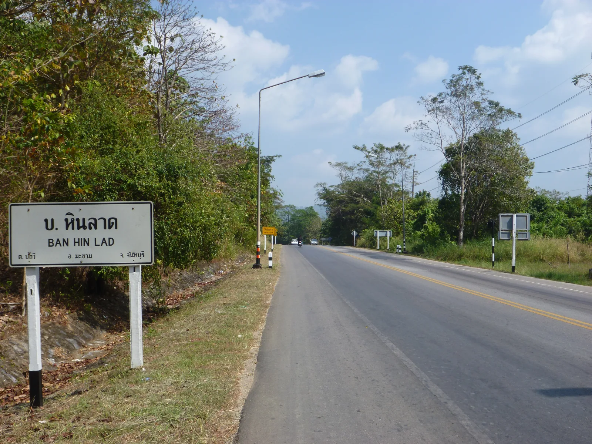
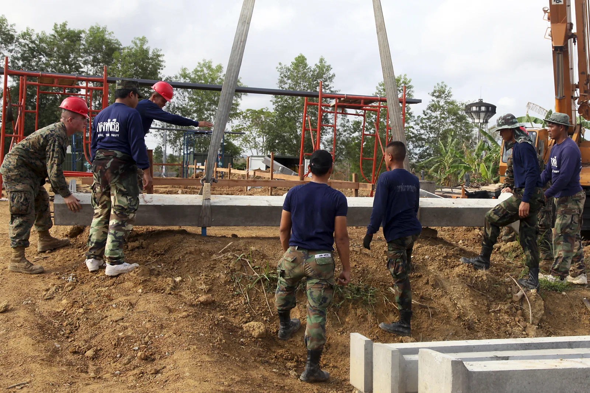

Gem market street browsingRoyal Thai Marine Corps Petty Officer 1st Class Apichat Roonlertpol, left, engineer, Combat Engineer Battalion, and U.S. Marine Corps Lance Cpl. Gabriel F. Salazar, combat engineer, Marine Wing Support Squadron 172, Marine Wing Support Group 17, 1st Marine Air Wing, work together to clean a cement mixer used in the construction of a classroom during exercise Cobra Gold 2011 at Baan Pong Wua School, Rayong Province, Kingdom of Thailand, Feb. 3, 2011. Humanitarian and Civic Assistance programs conducted by Thailand and the United States Armed Forces demonstrate a commitment to humanitarian interests and improving the quality of life and general welfare of residents in the area. (U.S. Marine Corps photo by Lance Cpl. Alejandro Pena/Released)

Ban Hin Lad the road

U.S., Royal Thai Marines, and members of the community participate in the opening ceremony for the construction of a multipurpose building during Cobra Gold 2012 at the Ban Khunsong School in Chanthaburi province, Thailand, Jan. 19, 2012. The Marines are assigned to the Marine Wing Support Squadron 172. During the ceremony four columns were blessed, symbolizing good fortune and protection for the workers and students. U.S. Marine Corps photo by Lance Cpl. Carl Payne

![Royal Thai Marine Corps Petty Officer 1st Class Apichat Roonlertpol, left, engineer, Combat Engineer Battalion, and U.S. Marine Corps Lance Cpl. Gabriel F. Salazar, combat engineer, Marine Wing Support Squadron 172, Marine Wing Support Group 17, 1st Marine Air Wing, work together to clean a cement mixer used in the construction of a classroom during exercise Cobra Gold 2011 at Baan Pong Wua School, Rayong Province, Kingdom of Thailand, Feb. 3, 2011. Humanitarian and Civic Assistance programs conducted by Thailand and the United States Armed Forces demonstrate a commitment to humanitarian interests and improving the quality of life and general welfare of residents in the area. (U.S. Marine Corps photo by Lance Cpl. Alejandro Pena/Released)](../../assets/images/provinces/chanthaburi/gallery-1.webp)